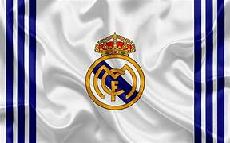
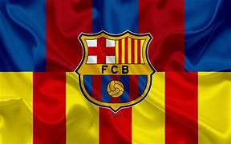
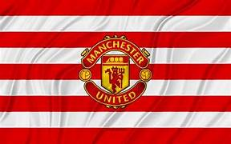

CONOCE ALGUNOS DE LOS EQUIPOS MÁS IMPORTANTES DE LA HISTORIA
-
Real Madrid

Historia:
Fundado en 1902, el Real Madrid es uno de los clubes más exitosos del mundo, con múltiples títulos de LaLiga y Champions League. Grandes jugadores como Cristiano Ronaldo, Di Stéfano y Zidane han sido parte de su historia.
-
FC Barcelona

Historia:
Fundado en 1899, el FC Barcelona es famoso por su estilo de juego y su cantera, La Masia. Ha contado con leyendas como Lionel Messi, Xavi e Iniesta, y ha ganado numerosas ligas y Champions League.
-
Manchester United

Historia:
El Manchester United, fundado en 1878, es uno de los clubes más grandes de Inglaterra. Ha ganado múltiples títulos de la Premier League y Champions League, con figuras icónicas como Eric Cantona, David Beckham y Wayne Rooney.